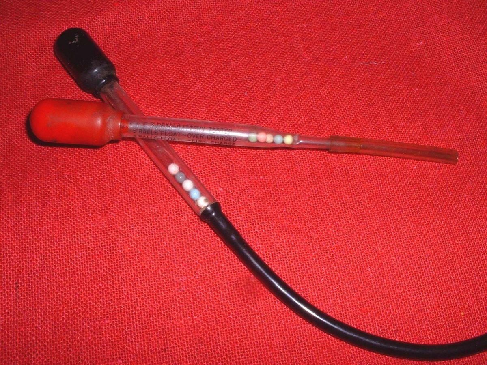
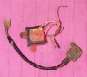

The battery case bulges, it is hot to touch, it hisses or bubbles, it smells of rotten eggs or acid, or acid is leaking onto the frame. This is a failed battery and often a sign of overcharging, a charger set too high, an internal short, or physical damage. A lead acid battery that boils gives off hydrogen, which explodes, and sulphuric acid, which burns. A swollen lithium battery can catch fire. Electric motorcycle traction packs are a different and more dangerous case: see Battery pack is dropped, dented, swollen or wet.
Is it safe to ride?
No. Stop now. Switch off the engine and the key.
Quick checks first
- Do not charge it, jump it or try to start the bike.
- No flames, cigarettes or sparks nearby.
- Wear glasses and gloves before touching it. Let a hot battery cool outdoors.
- If acid touches your skin, wash it off with plenty of water (baking soda helps neutralise it). If it gets in your eyes, rinse with clean water for a long time and get medical help.
- If a lithium battery is smoking, move away and keep people back.
Diagnose it step by step
1Is the battery smoking, very hot or (lithium) giving off smoke or flames?
- Yes: move away. Do not touch it. Use a fire extinguisher only if it is safe, and call for help.
- No: go to step 2.
2Once cool, remove it: negative (−) first, then positive (+), keep it upright. Is the case swollen, cracked or leaking?
- Yes: it must be replaced. Take it to a battery recycler. Clean acid off the tray and frame with baking soda and water, then rinse. Replace a 12 V battery.
- No (it only got hot): go to step 3.
3Was it on a charger, and was the charger the right type and rate? (K-Light 125: 0.6 A standard rate)
- No, a car or fast charger was used, or the wrong type for lithium: the charger caused it. Replace the battery and use a suitable charger next time. Test and charge a 12 V battery.
- It happened on the bike: go to step 4.
4Before fitting a new battery, does the charging voltage stay in range? (K-Light 125: 14.5 ± 0.5 V at 5000 rpm)
- No, too high: fix the regulator first. Battery overcharges and bulbs blow, Test the regulator rectifier.
- Yes: the battery had an internal fault or was very old. Fit the correct new battery.
5Flooded battery: is the vent tube blocked, kinked or missing?
- Yes: gas could not escape and acid was pushed out. Route a new vent tube with no kinks, away from the chain.
Causes, most likely first
| Cause | How to confirm | Fix |
|---|---|---|
| Charger too strong or wrong type | Happened during charging | Replace a 12 V battery |
| Overcharging from a failed regulator | High charging voltage | Test the regulator rectifier |
| Internal short in an old battery | Normal charging voltage; one hot battery | Replace a 12 V battery |
| Blocked vent tube (flooded type) | Kinked or missing tube | Fit a new vent tube |
| Physical damage or freezing | Cracked case | Replace a 12 V battery |
Reference values (K-Light 125)
| Item | Value | PDF page |
|---|---|---|
| Standard charge rate | 0.6 A | 76 |
| Charging voltage | 14.5 ± 0.5 V at 5000 rpm | 78 |